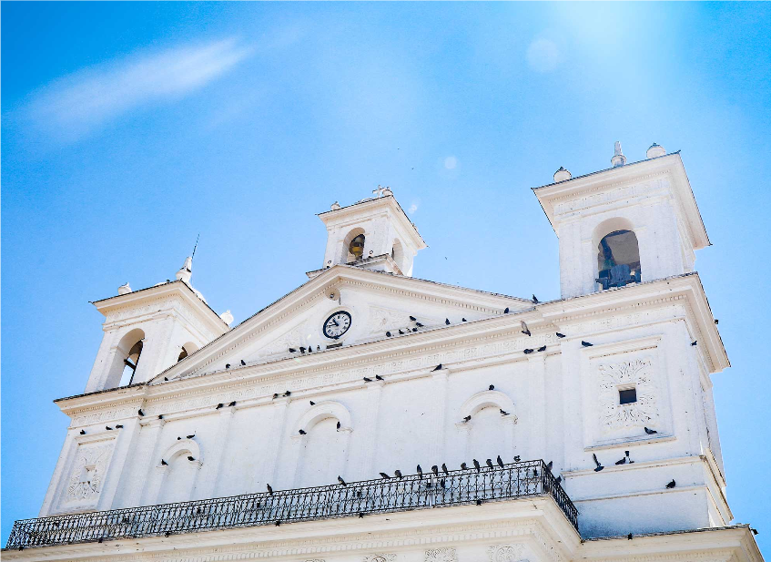
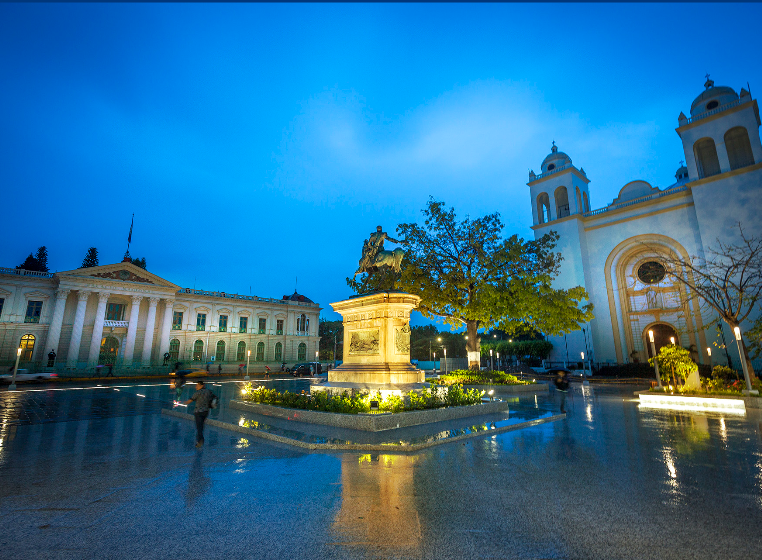
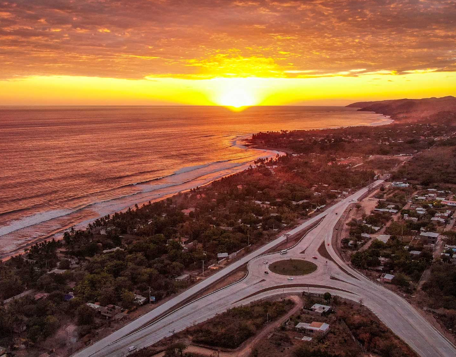

SUCHITOTO: Un lugar de pájaros y flores
Esta ciudad colonial alberga una invaluable riqueza cultural e histórica, la cual se funde con la naturaleza y sus imponentes vistas, haciendo honor a su significado en Náhuatl “lugar de pájaros y flores”.
Suchitoto albergó la primera capital del país en 1528. Al caminar por sus calles empedradas apreciarás los techos de teja hecha de tierra, hermosos balcones, pintorescas casas y puertas que te transportarán al pasado. Además, encontrarás muchos centros culturales, galerías, museos, ventas de artesanías y espacios de desarrollo comunitarios, entre otros.

SAN SALVADOR
La capital de El Salvador es tu punto de inicio ideal para de cualquier aventura. Aquí encontrarás una diversidad de opciones de ocio, cultura, compras o negocios. Ubicada a 40 kilómetros del Aeropuerto Internacional, en la capital se encuentran las sedes de gobierno, las principales empresas, embajadas, hoteles boutique con gran encanto y hoteles cinco estrellas; así como museos, monumentos y ciudades residenciales.
Ideal para el turismo de compras, San Salvador alberga modernos centros comerciales donde encontrarás marcas internacionales de alto renombre, así como marcas locales de gran valor.
El corazón de la ciudad es su Centro Histórico, donde podrás visitar el Teatro Nacional la Catedral Metropolitana y el Palacio Nacional. Rodeado de pequeños comercios que muestran la cotidianidad comercial de la ciudad, el centro es también un punto importante para la cultura y la historia.

LA LIBERTAD
Ubicado en la zona central, su cercanía a la capital y la accesibilidad son algunos de los motivos por lo que muchos llegan a La Libertad, ya que a menos de una hora estarás degustando de un manjar de mariscos frescos, te desconectarás del bullicio de la ciudad y disfrutarás de un bello atardecer. Este departamento te ofrece áreas de ruinas prehispánicas, edificaciones coloniales, las más fértiles zonas agrícolas y hermosas playas, entre las más famosas están El Tunco, El Majahual, San Blas, El Sunzal y San Diego.
